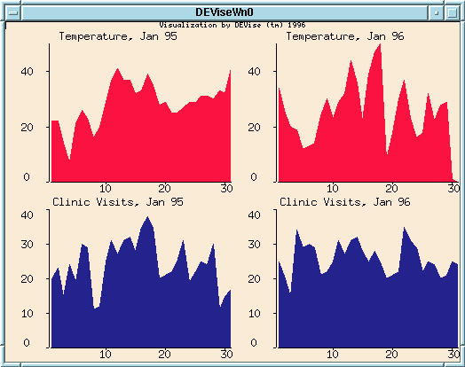

Family Medicine/National Climate Data Center Example

Input Data
The input data:
- consists of two separate data sources: clinic information on the number
of visits, and NCDC information on the temperature in Madison.
- the clinic visit information is local.
- the temperature data is generated by the NCDC server as a result
of queries sent to its forms interface.
Problem
Display the number of visits to the UW Family Medicine Clinic and the
temperature in Madison over a given time period, so that physicians can
look for correlations.
Visualization
Click here to see our model of creating
visualizations.
The visualization is created as follows:
- Define the 'Temperature, Jan 95' view with the NCDC server as its
data source.
- Define the 'Clinic Visits, Jan 95' view with the local clinic data
as its data source.
- Link X axes of these two views so that they display the same ranges
of data.
- Define the 'Temperature, Jan 96' view with the NCDC server as its
data source.
- Define the 'Clinic Visits, Jan 96' view with the local clinic data
as its data source.
- Link the X axis of these two views.
Observations
When a user zooms or scrolls on the data, the temperature data is updated
intelligently by requesting only the relevant data from the NCDC server.